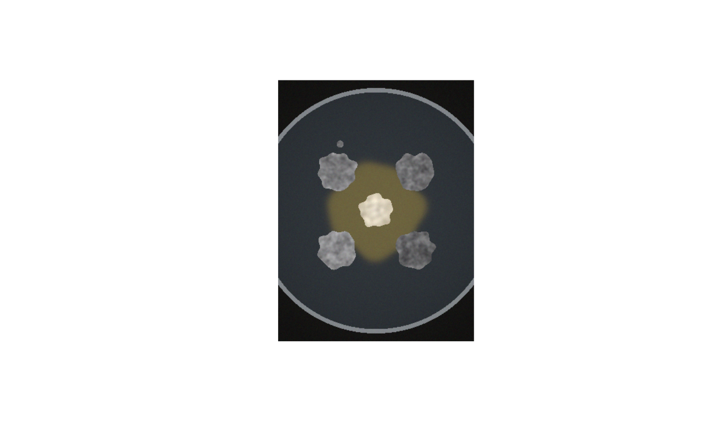

Generates a synthetic confrontation (or control) plate that reproduces the difficulties of real photographs: grey, wrinkled fungal colonies with irregular lobed outlines, a whitish central bacterium with a diffuse yellow halo that overlaps the colonies in brightness, satellite micro-colonies, a bright dish wall, vignetting, exposure errors and sensor noise. Because every pixel's true class and colour are known, the simulator is used to validate MycoHalo's accuracy (see the unit tests and the vignette) and to test new settings before applying them to real data.
simulate_plate(
width = 900,
height = 1200,
dish_r_frac = 0.47,
dish_diameter_mm = 90,
layout = plate_layout(),
colony_radius_mm = 7,
colony_L = c(52, 46, 40, 58),
colony_ab = c(0.5, -1),
edge_lightening = 4,
facing_darkening = 0,
texture_sd = 5,
bacteria = NULL,
bacteria_radius_mm = 6,
halo_radius_mm = 17,
bacteria_lab = c(86, 0, 9),
halo_lab = c(42, -2, 22),
agar_lab = c(22, -1, -4),
background_lab = c(8, 0, 1),
satellite = TRUE,
vignetting = 0.25,
exposure = 1,
noise_sd = 0.012,
grey_card = FALSE,
seed = 1
)Image size (px).
Dish outer radius as a fraction of the image height.
Physical dish diameter (sets the true scale).
A plate_layout() defining colony positions.
Mean colony radius (mm), recycled per colony.
Mean \(L^*\) of each colony (the melanization truth; lower = darker), recycled.
\(a^*, b^*\) of the colonies.
\(L^*\) units by which the outer 1.5 mm margin is lighter than the interior (age gradient).
\(L^*\) units by which the colony half facing the centre is darker (simulated localized melanization response).
SD (\(L^*\)) of the wrinkle texture.
Include a central bacterium (default: from layout).
Radii of bacterium and halo.
CIELAB of bacterium and of the halo core.
CIELAB of agar and photographic background.
Add a small satellite colony next to the first colony.
Relative light fall-off at the dish edge (0 = none).
Multiplicative exposure error in linear light.
Gaussian sensor noise (sRGB units, 0-1).
Add an 18 % grey card (L* = 50) in the lower-left corner.
Random seed. The user's random-number stream is restored afterwards.
A list with image (H x W x 3 sRGB array) and truth (dish
circle, mm_per_px, per-colony true area and mean \(L^*\) before
illumination effects, label matrix, bacteria and halo masks, grey-card
region).
sim <- simulate_plate(width = 300, height = 400, seed = 1)
show <- function(a) { plot(as.raster(a)) }
show(sim$image)

sim$truth$colonies
#> colony_id x y area_mm2 L_mean MI_mean
#> 1 TL 90.67877 140.6788 154.2355 52.95687 47.04313
#> 2 TR 210.32123 140.6788 154.4074 47.11511 52.88489
#> 3 BR 210.32123 260.3212 154.2355 42.20366 57.79634
#> 4 BL 90.67877 260.3212 154.5220 59.18494 40.81506